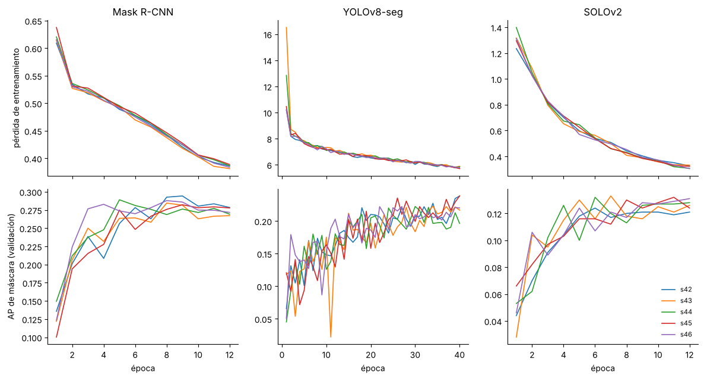

4. Implementación de los modelos base#
En esta sección del trabajo se describe cómo fue el proceso de entrenamiento de las redes Mask R-CNN, YOLOv8-seg y SOLOv2: el protocolo común, la selección de hiperparámetros, las 15 corridas, su costo computacional, las curvas de entrenamiento y el estudio piloto.
En la celda siguiente se cargan las rutas y funciones del proyecto. No se entrena nada: las tablas y figuras se obtienen de los resultados guardados de las 15 corridas.
Corridas encontradas: ['maskrcnn_s42', 'maskrcnn_s43', 'maskrcnn_s44', 'maskrcnn_s45', 'maskrcnn_s46', 'solov2_s42', 'solov2_s43', 'solov2_s44', 'solov2_s45', 'solov2_s46', 'yolov8seg_s42', 'yolov8seg_s43', 'yolov8seg_s44', 'yolov8seg_s45', 'yolov8seg_s46']
4.1 Protocolo experimental#
Se entrenaron los tres modelos base (Mask R-CNN, YOLOv8-seg y SOLOv2) con cinco semillas cada uno (42 a 46): 15 corridas en total. Todas las corridas comparten el mismo protocolo:
Partición. La partición agrupada congelada del EDA (
results/eda/particion.csv): 744 imágenes de entrenamiento, 93 de validación y 108 de prueba. En prueba hay 14 grupos (sesiones o escenas de captura). Ninguna sesión aparece en más de un conjunto.Entrada. Imagen completa de 1280×720, sin reescalar ni recortar, porque el diámetro mediano de un tornillo es de 10.6 px (sección 2.5). Mask R-CNN y SOLOv2 usan solo volteo horizontal. YOLOv8-seg usa los aumentos por defecto de ultralytics: mosaico (apagado en las últimas 10 épocas), variación de color HSV, traslación de ±10 %, escala de ±50 % y volteo horizontal.
Inicialización. Pesos preentrenados en COCO para los tres modelos.
Selección del modelo. Se guarda la mejor época según el conjunto de validación: AP de máscara en Mask R-CNN y SOLOv2, y el fitness de ultralytics en YOLOv8-seg. El conjunto de prueba se evalúa una sola vez por corrida.
Confianza mínima para aceptar una detección. Para calcular F1 y PQ, se descartan las predicciones cuyo puntaje de confianza queda por debajo de este corte. El corte se elige en validación para maximizar el F1 medio por imagen y se mantiene fijo en prueba. AP se calcula con todos los puntajes, sin fijar un corte.
Tabla 4.1. Configuración por modelo.
Modelo |
Tipo |
Parámetros |
Épocas |
Lote |
Optimizador |
Marco |
|---|---|---|---|---|---|---|
Mask R-CNN (ResNet-50-FPN) |
Dos etapas, con cajas |
43 922 395 |
12 |
2 |
SGD, momento 0.9, calentamiento + coseno, lr 0.0025 × lote |
torchvision 0.26 |
YOLOv8n-seg |
Una etapa, con cajas |
3 263 811 |
40 |
4 |
Valores por defecto de ultralytics |
ultralytics 8.4.207 |
SOLOv2 (ResNet-50-FPN) |
Una etapa, sin cajas |
46 228 801 |
12 |
2 |
SGD, lr 0.01 × lote/16 (receta oficial |
MMDetection 3.3 |
Mask R-CNN usa anclas de 8 a 128 px en lugar de las de 32 a 512 px que trae torchvision por defecto, porque el 98,8 % de los tornillos son small según COCO (menos de 32×32 px) (sección 2.5).
Hardware y reparto. Las corridas se repartieron entre dos máquinas por semilla, no por modelo:
semillas 42, 43 y 44 en una RTX 3060 Laptop de 6 GB;
semillas 45 y 46 en una RTX 3050 Laptop de 6 GB.
Las dos usaron la misma configuración y las mismas versiones de los paquetes (requirements_wdsd_dl_congelado.txt). Así, cualquier efecto de la máquina cae por igual sobre los tres modelos.
Selección de hiperparámetros#
Los hiperparámetros se fijaron con tres criterios: partir de la receta oficial de cada implementación, que ya está validada en COCO; adaptarla a lo que mostró el EDA sobre el tamaño de los tornillos; y ajustarla a la memoria de una GPU de 6 GB. Las elecciones que dependen de los datos de WDSD, es decir, la época que se conserva y la confianza mínima de las detecciones, se toman con el conjunto de validación. El conjunto de prueba no interviene en ninguna elección.
Tabla 4.1b. Hiperparámetros y su justificación.
Hiperparámetro |
Valor |
Justificación |
|---|---|---|
Resolución de entrada |
1280×720, sin reescalar ni recortar, en los tres modelos ( |
El diámetro mediano de un tornillo es de 10,6 px. Reducir la imagen a la mitad lo dejaría en unos 6 px, demasiado poco para delimitar su máscara (sección 2.9 del EDA). |
Anclas de Mask R-CNN |
8, 16, 32, 64 y 128 px, con proporciones 0,5, 1 y 2 |
Las anclas por defecto de torchvision van de 32 a 512 px y están pensadas para objetos medianos y grandes. El 98,8 % de los tornillos es small según COCO (menos de 32×32 px). |
Pesos iniciales |
Preentrenados en COCO |
Con 744 imágenes de entrenamiento, partir de características ya aprendidas acelera la convergencia y reduce el sobreajuste. |
Tamaño de lote |
2 en Mask R-CNN y SOLOv2; 4 en YOLOv8n-seg |
Cabe a resolución completa en las dos GPU de 6 GB, con un pico medido de unos 2,7 GB (tabla 4.3). YOLOv8n-seg es mucho más liviano y admite un lote mayor. |
Tasa de aprendizaje |
Mask R-CNN: 0,0025 × lote = 0,005. SOLOv2: 0,01 × lote / 16 = 0,00125. YOLOv8-seg: la de ultralytics |
Se parte de la tasa de la receta oficial y se escala en proporción al tamaño del lote (regla de escalado lineal), para que cada paso tenga un tamaño comparable al de la receta original. |
Optimizador y calendario |
SGD con momento 0,9, decaimiento de pesos 10⁻⁴, calentamiento lineal y decaimiento coseno en Mask R-CNN y SOLOv2; optimizador automático de ultralytics en YOLOv8-seg |
Es la configuración con la que se publicaron estos modelos. El calentamiento evita pasos grandes al inicio, cuando la cabeza nueva de una sola clase todavía es aleatoria, y el coseno reduce la tasa de forma suave hasta el final. |
Número de épocas |
12 en Mask R-CNN y SOLOv2; 40 en YOLOv8-seg |
12 épocas es el calendario estándar «1x» de estos detectores. Un piloto de tiempos, con una época de cada modelo, midió cuántas épocas cabían en el tiempo de cómputo disponible; YOLOv8n-seg es más rápido por época y admite más. |
Época que se conserva |
La de mejor AP de máscara en validación (fitness de ultralytics en YOLOv8-seg) |
Evita quedarse con una época sobreajustada. La figura 4.1 muestra que Mask R-CNN alcanza su máximo en las épocas 8 y 9. |
Confianza mínima de una detección |
La que maximiza el F1 medio por imagen en validación (columna «umbral (val)» de la tabla 4.2) |
F1 y PQ dependen de qué detecciones se aceptan. Elegir el corte en validación y fijarlo en prueba evita ajustarlo con los datos de evaluación. |
Aumento de datos |
Volteo horizontal en Mask R-CNN y SOLOv2; mosaico, HSV, traslación, escala y volteo en YOLOv8-seg |
Los tornillos no tienen una orientación preferente, así que el volteo no altera su apariencia. En YOLOv8-seg se conservan los aumentos con los que ultralytics entrena sus modelos. |
Semillas |
42, 43, 44, 45 y 46 |
Cinco repeticiones de cada configuración miden cuánto cambia el resultado por la inicialización y el orden de los datos (sección 4.5). |
Con estas elecciones, cada modelo trabaja a la escala de objetos de unos 10 px y dentro de los recursos disponibles, y los tres se comparan bajo el mismo protocolo de partición, selección y evaluación.
4.2 Corridas#
Cada corrida deja en results/instancias/corridas/<modelo>_s<semilla>/:
resumen.json: entorno, tiempo, memoria y métricas;metricas.json: AP, F1 y PQ en validación y prueba, y el umbral elegido en validación;test_por_imagen.csv: una fila por imagen de prueba (TP, FP, FN, F1, PQ), entrada de la sección 5;preds_val.jsonypreds_test.json: predicciones en formato COCO, para recalcular cualquier métrica sin reentrenar.
Tabla 4.2. Las 15 corridas.
filas = []
for d in sorted(CORR.glob('*_s*')):
if not (d / 'resumen.json').exists():
continue
r = json.loads((d / 'resumen.json').read_text(encoding='utf8'))
m = r['metricas']
filas.append({'modelo': MODELOS[r['modelo']], 'semilla': r['semilla'], 'GPU': r['entorno']['gpu'].replace('NVIDIA GeForce ', ''),
'épocas': r['epocas'], 'min': round(r['s_total'] / 60, 1), 'umbral (val)': m['umbral_score'],
'val AP': round(m['val']['AP'], 3), 'test F1 img': round(m['test']['F1_img'], 3),
'test AP': round(m['test']['AP'], 3)})
corridas = pd.DataFrame(filas)
display(corridas)
| modelo | semilla | GPU | épocas | min | umbral (val) | val AP | test F1 img | test AP | |
|---|---|---|---|---|---|---|---|---|---|
| 0 | Mask R-CNN | 42 | RTX 3060 Laptop GPU | 12 | 33.7 | 0.70 | 0.294 | 0.458 | 0.214 |
| 1 | Mask R-CNN | 43 | RTX 3060 Laptop GPU | 12 | 33.0 | 0.50 | 0.284 | 0.447 | 0.217 |
| 2 | Mask R-CNN | 44 | RTX 3060 Laptop GPU | 12 | 33.7 | 0.60 | 0.289 | 0.418 | 0.217 |
| 3 | Mask R-CNN | 45 | RTX 3050 6GB Laptop GPU | 12 | 76.0 | 0.60 | 0.282 | 0.450 | 0.214 |
| 4 | Mask R-CNN | 46 | RTX 3050 6GB Laptop GPU | 12 | 70.9 | 0.60 | 0.288 | 0.461 | 0.223 |
| 5 | SOLOv2 | 42 | RTX 3060 Laptop GPU | 12 | 32.6 | 0.25 | 0.124 | 0.326 | 0.104 |
| 6 | SOLOv2 | 43 | RTX 3060 Laptop GPU | 12 | 31.3 | 0.20 | 0.133 | 0.310 | 0.117 |
| 7 | SOLOv2 | 44 | RTX 3060 Laptop GPU | 12 | 31.3 | 0.15 | 0.132 | 0.256 | 0.116 |
| 8 | SOLOv2 | 45 | RTX 3050 6GB Laptop GPU | 12 | 56.3 | 0.20 | 0.132 | 0.305 | 0.111 |
| 9 | SOLOv2 | 46 | RTX 3050 6GB Laptop GPU | 12 | 55.5 | 0.20 | 0.131 | 0.287 | 0.116 |
| 10 | YOLOv8-seg | 42 | RTX 3060 Laptop GPU | 40 | 20.9 | 0.15 | 0.265 | 0.519 | 0.234 |
| 11 | YOLOv8-seg | 43 | RTX 3060 Laptop GPU | 40 | 21.0 | 0.20 | 0.271 | 0.584 | 0.233 |
| 12 | YOLOv8-seg | 44 | RTX 3060 Laptop GPU | 40 | 21.1 | 0.35 | 0.267 | 0.429 | 0.223 |
| 13 | YOLOv8-seg | 45 | RTX 3050 6GB Laptop GPU | 40 | 63.7 | 0.25 | 0.269 | 0.568 | 0.245 |
| 14 | YOLOv8-seg | 46 | RTX 3050 6GB Laptop GPU | 40 | 61.0 | 0.25 | 0.267 | 0.504 | 0.237 |
4.3 Costo computacional#
Tabla 4.3. Costo computacional por corrida (entrenamiento + evaluación).
Modelo |
Minutos, RTX 3060 (3 semillas) |
Minutos, RTX 3050 (2 semillas) |
Memoria GPU pico (GB) |
|---|---|---|---|
Mask R-CNN |
33.5 |
73.5 |
2.7 |
YOLOv8-seg |
21.0 |
62.4 |
2.6 |
SOLOv2 |
31.7 |
55.9 |
~2.6* |
* Para SOLOv2 se toma el pico del registro de MMDetection durante el entrenamiento; el contador de PyTorch del script se reinicia dentro de MMDetection y da un valor menor que no corresponde al entrenamiento.
corridas.groupby(['modelo', 'GPU'])['min'].agg(['mean', 'count']).round(1)
| mean | count | ||
|---|---|---|---|
| modelo | GPU | ||
| Mask R-CNN | RTX 3050 6GB Laptop GPU | 73.4 | 2 |
| RTX 3060 Laptop GPU | 33.5 | 3 | |
| SOLOv2 | RTX 3050 6GB Laptop GPU | 55.9 | 2 |
| RTX 3060 Laptop GPU | 31.7 | 3 | |
| YOLOv8-seg | RTX 3050 6GB Laptop GPU | 62.4 | 2 |
| RTX 3060 Laptop GPU | 21.0 | 3 |
4.4 Curvas de entrenamiento y validación#
Figura 4.1. Pérdida de entrenamiento (arriba) y AP de máscara en validación (abajo) por época, una línea por semilla. Cada marco reporta su propia pérdida total, así que las escalas no se comparan entre modelos. El AP de YOLOv8-seg es el que calcula ultralytics; el de Mask R-CNN y SOLOv2 sale de COCOeval. En las tres columnas se guarda la época con mejor AP de validación.
def curvas(d, m):
if m == 'maskrcnn':
h = pd.read_csv(d / 'historial.csv')
return h.epoca, h.perdida, h.epoca, h.val_AP
if m == 'yolov8seg':
h = pd.read_csv(d / 'ultra' / 'results.csv'); h.columns = h.columns.str.strip()
perd = h[['train/box_loss', 'train/seg_loss', 'train/cls_loss', 'train/dfl_loss']].sum(axis=1)
return h.epoch, perd, h.epoch, h['metrics/mAP50-95(M)']
escal = max(d.glob('*/vis_data/scalars.json'), key=lambda p: p.stat().st_size)
filas = [json.loads(l) for l in escal.read_text(encoding='utf8').splitlines() if l.strip()]
tr = pd.DataFrame([f for f in filas if 'loss' in f]).groupby('epoch').loss.mean()
va = pd.DataFrame([f for f in filas if 'coco/segm_mAP' in f])
return tr.index, tr.values, va.step, va['coco/segm_mAP']
orden = ['maskrcnn', 'yolov8seg', 'solov2']
fig, ax = plt.subplots(2, 3, figsize=(12, 6.5), sharex='col')
for j, m in enumerate(orden):
for d in sorted(CORR.glob(f'{m}_s*')):
e1, perd, e2, ap = curvas(d, m)
s = d.name.rsplit('_s', 1)[1]
ax[0, j].plot(e1, perd, lw=1.2, label=f's{s}')
ax[1, j].plot(e2, ap, lw=1.2, label=f's{s}')
ax[0, j].set_title(MODELOS[m]); ax[1, j].set_xlabel('época')
for a in ax[:, j]:
a.spines[['top', 'right']].set_visible(False)
ax[0, 0].set_ylabel('pérdida de entrenamiento'); ax[1, 0].set_ylabel('AP de máscara (validación)')
ax[1, 2].legend(frameon=False, fontsize=8, loc='lower right')
plt.tight_layout(); plt.show()

Lectura (observada en la figura).
Pérdida de entrenamiento. Baja de forma monótona en los tres modelos, y las 5 semillas siguen trayectorias casi idénticas.
Mask R-CNN. El AP de validación sube hasta las épocas 8 y 9 (≈ 0.29) y después se aplana o cae un poco (≈ 0.27), mientras la pérdida sigue bajando: es un sobreajuste leve al final. La selección por validación se queda con la mejor época.
YOLOv8-seg. El AP de validación sigue subiendo en la época 40 y oscila bastante de una época a otra. Con más épocas probablemente mejoraría, así que el presupuesto fijo lo deja en desventaja (ver limitaciones).
SOLOv2. Llega a ≈ 0.12 hacia la época 5 y después se queda entre 0.11 y 0.13. Más épocas no parecen capaces de cerrar la distancia con los otros dos.
No hay métricas en el conjunto de entrenamiento, así que la brecha entre entrenamiento y validación se juzga por la forma de las curvas, no con un número.
4.5 Estudio piloto y dimensionamiento (a posteriori)#
El enunciado pide un estudio piloto con al menos 5 semillas por modelo sobre validación, previo a la ejecución definitiva. No se hizo antes. Por el calendario, las 5 semillas definitivas se lanzaron directamente. Se reporta aquí el mismo cálculo hecho con esas 5 semillas, sobre validación, como dimensionamiento a posteriori y como punto de partida para el número de semillas del E2. Las corridas se emparejan por semilla, como pide el enunciado.
Tabla 4.4. F1 de instancia por imagen en validación: media, desviación estándar y coeficiente de variación sobre las 5 semillas.
from itertools import combinations
DELTA = 0.2
filas = []
for d in sorted(CORR.glob('*_s*')):
mod, s = d.name.rsplit('_s', 1)
m = json.loads((d / 'metricas.json').read_text(encoding='utf8'))
filas.append({'modelo': mod, 'semilla': int(s), 'F1_val': m['val']['F1_img']})
val = pd.DataFrame(filas).pivot(index='semilla', columns='modelo', values='F1_val')[orden]
piloto = val.agg(['mean', 'std']).T.rename(columns={'mean': 'media', 'std': 'DE'})
piloto['CV (%)'] = 100 * piloto['DE'] / piloto['media']
display(piloto.rename(index=MODELOS).round(4))
| media | DE | CV (%) | |
|---|---|---|---|
| modelo | |||
| Mask R-CNN | 0.6584 | 0.0224 | 3.3993 |
| YOLOv8-seg | 0.6842 | 0.0356 | 5.1956 |
| SOLOv2 | 0.4019 | 0.0106 | 2.6463 |
Tabla 4.5. Dimensionamiento por par: \(\hat\sigma_d\) es la desviación estándar de las diferencias pareadas por semilla; \(R \approx (z_{0.975} + z_{0.80})^2\, \hat\sigma_d^2 / \delta^2\) es el número de corridas necesario para detectar δ = 0.20 con potencia 0.80 y α = 0.05; el MDE es la menor diferencia detectable con las 5 corridas hechas.
z = stats.norm.ppf(0.975) + stats.norm.ppf(0.80)
filas = []
for a, b in combinations(orden, 2):
dif = val[a] - val[b]; sd = dif.std(ddof=1)
filas.append({'par': f'{MODELOS[a]} − {MODELOS[b]}', 'dif. media (val)': dif.mean(), 'σd': sd,
'δ/σd': DELTA / sd, 'R necesarias': int(np.ceil(z**2 * sd**2 / DELTA**2)),
'MDE con 5 corridas': z * sd / np.sqrt(len(dif)), 'Shapiro–Wilk p': stats.shapiro(dif).pvalue})
display(pd.DataFrame(filas).round(4))
| par | dif. media (val) | σd | δ/σd | R necesarias | MDE con 5 corridas | Shapiro–Wilk p |
|---|---|---|---|---|---|---|
| Mask R-CNN − YOLOv8-seg | -0.0259 | 0.0260 | 7.6796 | 1 | 0.0326 | 0.4090 |
| Mask R-CNN − SOLOv2 | 0.2564 | 0.0181 | 11.0596 | 1 | 0.0227 | 0.3702 |
| YOLOv8-seg − SOLOv2 | 0.2823 | 0.0282 | 7.0999 | 1 | 0.0353 | 0.1479 |
Lectura del piloto.
La variabilidad entre semillas es baja (CV de 2,6 % a 5,2 %). Con δ = 0,20, la aproximación normal de la tabla 4.5 da menos de una corrida para cada par; al redondear hacia arriba resulta R = 1. Este cálculo no reemplaza las cinco semillas usadas para estimar la variabilidad.
El MDE entre semillas queda entre 0,023 y 0,035, menor que δ.
Shapiro–Wilk no rechaza la normalidad de las diferencias (p ≥ 0,15), aunque con cinco valores tiene poca potencia.
La unidad de inferencia son los grupos de prueba. Con 14 grupos, el MDE de Mask R-CNN frente a YOLOv8-seg es ≈ 0,10, menor que δ = 0,20. Aumentar el número de escenas en el E2 permitirá generalizar a más situaciones y compensar la corrección por comparaciones múltiples.